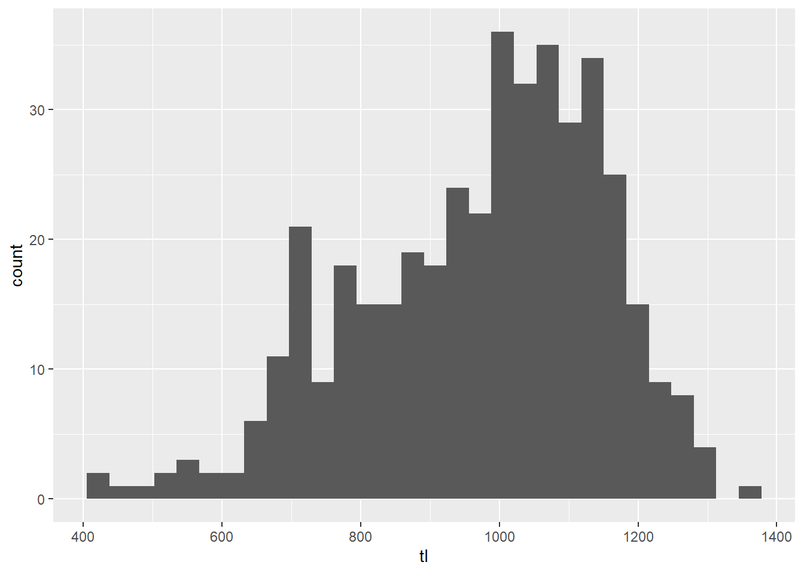
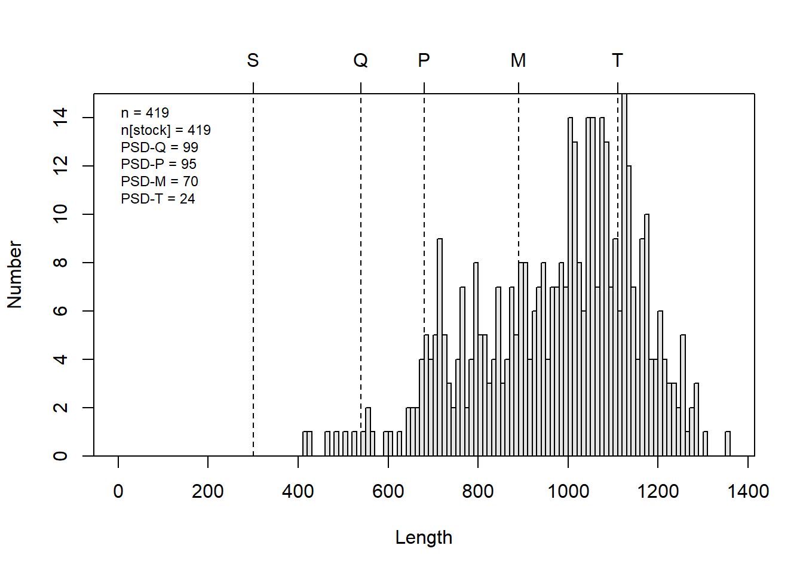

Introductory fisheries statistics in R
Introduction
Now that we have looked at some of the basic programming and common statistical tools in R, we can dive into some of the tools that have been created just for fish! There are a few packages for dealing with data from fish and fisheries, and we will just glance off the tip of the iceberg here to demonstrate a few common fisheries analyses. Hopefully you find, like many of us, that once you’ve tackled the code the first time it is easy to translate from one species or data set to another. And next time, you’ll have a head-start!
For this workshop, we will continue to work with tidyverse for data manipulation and plotting, and we’ll use the FSA package Ogle et al. 2020 for some fisheries-specific functions that should free up some time in your daily routine. We’ll need the nlstools package to make predictions from growth curves we’ll fit with nls(). And, we will use the plotrix package to plot some of our FSA output. You’ll need to install these packages first if you haven’t already. If you are working in RStudio, you probably got a prompt to install them when you opened the workshop script called fishStats.R if you’ve never worked with them before.
You can load all of these packages when you are ready to get started:
Length-frequency histograms
Doing it ‘by hand’
Let’s start by reading in some grass carp (Ctenopharyngodon idella) data from Lake Gaston, a large reservoir on the border of North Carolina and Virginia in the heartland of contemporary triploid grass carp population dynamics (hey, it’s a thing!). The data contain information about year of collection (2006, 2007, 2009, 2010, and 2017), total length (tl), mass (kg), and age assigned from otoliths for each of 419 individual fish in cohorts(1994 - 2014). It also includes information about modeled number of grass carp (n_gc), estimated hectares of hydrilla (ha_hydrilla), and number and biomass of grass carp per hectare of hydrilla. These data are from a recent analysis by a former New York Chapter AFS member and MS Lake Management student at SUNY Oneonta Caves et al. In press. If you are a member of American Fisheries Society you have access to the early view of that article. Just sayin…
Shameless, I know, just read in the data file:
Have a quick look at the first ten lines of the data
head(grasscarp, 10)
year tl kg age cohort n_gc ha_hydrilla n_ha kg_gc kg_ha
1 2006 1262 23.2 12 1994 25128 1203 21 129929 108
2 2006 569 2.7 2 2004 25128 1203 21 129929 108
3 2006 504 2.2 2 2004 25128 1203 21 129929 108
4 2006 846 8.0 3 2003 25128 1203 21 129929 108
5 2006 1138 23.9 10 1996 25128 1203 21 129929 108
6 2006 1187 18.6 10 1996 25128 1203 21 129929 108
7 2006 1207 19.5 12 1994 25128 1203 21 129929 108
8 2006 1086 21.3 10 1996 25128 1203 21 129929 108
9 2006 525 2.9 2 2004 25128 1203 21 129929 108
10 2006 837 8.2 4 2002 25128 1203 21 129929 108Take a quick look at the data structure
str(grasscarp)
'data.frame': 419 obs. of 10 variables:
$ year : int 2006 2006 2006 2006 2006 2006 2006 2006 2006 2006 ...
$ tl : int 1262 569 504 846 1138 1187 1207 1086 525 837 ...
$ kg : num 23.2 2.7 2.2 8 23.9 18.6 19.5 21.3 2.9 8.2 ...
$ age : int 12 2 2 3 10 10 12 10 2 4 ...
$ cohort : int 1994 2004 2004 2003 1996 1996 1994 1996 2004 2002 ...
$ n_gc : int 25128 25128 25128 25128 25128 25128 25128 25128 25128 25128 ...
$ ha_hydrilla: int 1203 1203 1203 1203 1203 1203 1203 1203 1203 1203 ...
$ n_ha : int 21 21 21 21 21 21 21 21 21 21 ...
$ kg_gc : int 129929 129929 129929 129929 129929 129929 129929 129929 129929 129929 ...
$ kg_ha : int 108 108 108 108 108 108 108 108 108 108 ...Don’t forget, you can even look at it like a spreadsheet!
Now, let’s make a basic l-f histogram of the grasscarp data. (You’ll get some constructive feedback from stat_bin() in ggplot2 about this. You can ignore it or use geom_hist(bins = 25) if it really bothers you.)
# Make a histogram with all of the arguments set to their defaults
ggplot(grasscarp, aes(tl)) + geom_histogram()
This is pretty ugly, and it doesn’t do a whole lot for us in terms of biological meaning. We can modify this plot to use standard breaks so that we can get, for example, 10-mm length bins that may have more biological meaning for fisheries management.
# Make a histogram with 10-mm size bins
ggplot(grasscarp, aes(x = tl)) + geom_histogram(binwidth = 10)Wow, that is way easier than it used to be even in R. Thanks ggplot()!
Okay, so this plot is better, but there is still a lot of ugly crap going on here. For one, the labels make no sense. The axes don’t cross at zero, we have no color, and we have an ugly main heading in our figure that we will virtually never use for papers or reports.
So, let’s fix it!!
First, let’s make a better looking histogram “by hand”.
# Make a histogram with 10-mm size bins
# But, make it pretty this time
ggplot(grasscarp, aes(x = tl)) +
geom_histogram(binwidth = 10) +
xlab("Total length (mm)") +
ylab("Frequency") +
theme_bw() +
scale_y_continuous(limits = c(0, 15), expand = c(0.01, 0)) +
theme(
axis.title.x = element_text(vjust = -1),
axis.title.y = element_text(vjust = 3)
)There, that looks a lot better. We might even think about putting this in a report or an article. If you wanted to save it out as a high-res image in that case, you could use the png(), jpeg(), tiff() or other functions for saving an image. You can check out any of these by running ?png in the console to open the help files.
Doing it in the FSA package
We can make some pretty nice figures by hand, but this can be a lot to learn and not everyone is into it. Likewise we may wish to have a bunch of other standard output with our reproducible figures.
If we want a faster solution, there are a number of packages that are maintained in R specifically for fish data. The most comprehensive tool sets is are FSA and the fishmethods packages. Here we will start to play with some of the tools in FSA, following examples from the package documentation, to see how some of the more common fish population assessment tools work.
The FSA package contains a lot of really cool tools that make life a lot easier. And, you can even get an introductory fisheries statistics book, fishR, that goes along with it. We will cover some basic applications here, but realize that this package can be used for a whole lot of other stuff, and now includes much of what previously was housed in many different places.
For example, if we wanted to create a length-frequency histogram that shows some of the Gabelhouse length categories, we could do it like this:
# Make an l-f histogram that includes Gabelhouse lengths
psdPlot(~tl, # Tell R the name of your length data
data = grasscarp, # Tell it the name of the data frame
species = "Grass Carp", # Pass species
w = 10 # Tell R how wide length-bins are
)
This is a heck of a lot easier than going through all of that other stuff if what we want is an l-f histogram with all of this info on it. You can, of course still customize what is displayed on the plot using optional arguments when you call psdPlot(). Remember that you can see these arguments, their default values, and their optional values by running ?psdPlot.
PSD calculations and plotting
The plots we used above are neat, but if what we are really after are the numbers or a tic-tac-toe graph for multiple species, then this is only going to give us part of what we want. Luckily, there are other tools for that stuff in the FSA package.
We will demonstrate PSD calculations in R using the FSA package here. Note that these functions are for convenience only, and you could totally do it by hand in R if you were inclined…ha!
# Calculate PSD for Gabelhouse length categories
# and each of the intervals
psdCalc(~tl,
data = grasscarp,
species = "Grass Carp",
digits = 1
)
Estimate 95% LCI 95% UCI
PSD-Q 98.6 96.8 100.0
PSD-P 94.5 91.1 97.9
PSD-M 70.4 63.5 77.3
PSD-T 24.3 17.9 30.8
PSD S-Q 1.4 0.0 3.2
PSD Q-P 4.1 1.1 7.0
PSD P-M 24.1 17.7 30.5
PSD M-T 46.1 38.6 53.6If you take a close look at the output, you can see that we not only get point estimates for each of the standard length categories we normally care about, but we also get 95% confidence intervals from those estimates! Very cool…about how long do you think that would have taken you to do from scratch for the first time in Excel?
Tic-tac-toe plots
The psdCalc() function is really great for calculating PSD for one species, but we are often interested in comparing PSD of predator and prey simultaneously, and graphically, for gauging things like ‘balance’ in fish communities.
So, let’s pretend we have some predator-prey data for which we have already calculated PSD.
We will start by making up (er, simulating) data for predator PSD and prey PSD with 95% Confidence intervals.
# Make up mean and 95% CI of PSD for each species
prey <- c(45, 30, 55)
pred <- c(25, 10, 37)
# Give names to the values in each of those objects
names(prey) <- names(pred) <- c("Estimate", "95% LCI", "95% UCI")Print predator and prey objects as a dataframe to see what they look like
Next, we will make a blank plotting window for our tictactoe() plot.
tictactoe(
predobj = c(30, 70),
preyobj = c(30, 70),
predlab = "Predator PSD",
preylab = "Prey PSD", obj.col = "black",
obj.trans = 0.2,
bnd.col = "black",
bnd.lwd = 1,
bnd.lty = 2
)
Now, that gives us a really nice blank plot! What about the data?
Well, we can add the data on our tic-tac-toe plot, of course.
# Load the `plotrix` package for the
# `plotCI` function first. You may need
# to install this if it didn't automatically
# install with `FSA`
library(plotrix)
# Plot the PSD and the confidence intervals
plotCI(prey[1], pred[1],
li = prey[2], ui = prey[3],
err = "x", pch = 16, add = TRUE
)
plotCI(prey[1], pred[1],
li = pred[2], ui = pred[3],
err = "y", pch = 16, add = TRUE
)Beautiful…Again, think back to the first time you made a tic-tac-toe plot in any other program - about how long did that take again? And could you re-use that plot with a new data set?
Estimating growth curves
Individual growth, based on length-at-age data can be really useful information when we are developing stock assessments on which we will eventually base fishery management decisions. Growth parameters are central to estimating fish mortality by indirect methods when “empirical” estimates are lacking and often form the basis for yield-per-recruit models that we use to predict effects of catch limits and size limits and develop regulations. There are a number of different tools that we can use to estimate growth curves in R, and many different growth curves that we may wish to fit.
The most commonly used growth curve for length-at-age data is the von Bertalanffy growth model, but there are a whole bunch of others that may be way better depending on the biology of the fish you are studying and any number of other factors. We can estimate these models using either individual length-at-age data, or by using population means. At a basic level we should get virtually identical answers as long as the data are representative. If we have the data, use of individual measurements is generally preferred, and R is a great way to do this.
Let’s look at an example. There are a couple of different ways we can go about fitting grwoth curves in R. All of them require that we pick some kind of growth model, and that we provide starting values for the parameters in that model. The parameters are quantities that govern the shape of the growth curve, and that we (usually) need to estimate from the data.
I know, sounds confusing, but the math is actually more straightforward than the funny polynomial lines you may have fit to length-age data in Excel when nobody was looking (don’t do that!!).
We’ll keep working with the grasscarp data for this one.
First, we need to define the von Bertalanffy growth model as an object so R can see it. Important: I am using tl and age below because those are the names of the columns in my data that hold length and age data. You will need to change that if you have different names for those columns in your data!
Now, we can pass this on to a non-linear optimizer, just like you might do with the “Solver” add-in for Excel. But first, we need to come up with some starting values. Without any prior knowledge of the study population this can be tough. But, we can get some starting values for our parameters (Linf, K, and t0) using the FSA package.
# Get starting values for each of your
# parameters using the `vbStarts` function
# from `FSA`
starts <- vbStarts(formula = tl ~ age, data = grasscarp)Now, we have a list of starting values that we can use to start estimating the growth function.
# Have a look at the starting values for
# the parameters.
starts
$Linf
[1] 1082.361
$K
[1] 0.3282342
$t0
[1] -0.4778118With these in hand, we can finally estimate the parameters for the von Bertalanffy growth function for these fishies:
# Fit the von Bertalanffy growth function using
# nonlinear least squares (nls) optimization
mymod <- nls(vbmod, data = grasscarp, start = starts)And, at long last we can have a look at the parameter estimates like this:
# Show model summary
summary(mymod)
Formula: tl ~ Linf * (1 - exp(-K * (age - t0)))
Parameters:
Estimate Std. Error t value Pr(>|t|)
Linf 1132.24913 13.35187 84.801 < 2e-16 ***
K 0.20361 0.01869 10.892 < 2e-16 ***
t0 -2.20748 0.40660 -5.429 9.65e-08 ***
---
Signif. codes: 0 '***' 0.001 '**' 0.01 '*' 0.05 '.' 0.1 ' ' 1
Residual standard error: 91.56 on 416 degrees of freedom
Number of iterations to convergence: 4
Achieved convergence tolerance: 3.834e-06We can predict mean length at age for each observation in our data set or from new data. For ease of plotting, we’ll predict tl from observed age in the grasscarp data using the default predict() function:
But, we are scientists, so we’d also like to get some confidence intervals for those predictions. At the time of writing, this still hasn’t been implemented but we can use a boot-strap approach to estimate mean length at age and confidence intervals for now. We’ll add a couple steps to follow the usual workflow from FSA here using the same typical von Bertalanffy growth model we defined above in vbmod.
# Get the desired growth function from a list
# of those that are available in FSA
vbO <- vbFuns("typical")
# Fit the model to the data using nls, like we did before
vb_fit <- nls(tl~vbO(age,Linf,K, t0), data=grasscarp, start=starts)
# Now, bootstrap the model fitting process
boot_fit <- nlsBoot(vb_fit)
# Predict length at age from the model
# t is age. Here, we tell R to predict
# length at each unique age in our original
# data, and calculate some bootstrapped confidence
# intervals
boot_preds <- data.frame(
predict(boot_fit, vbO, t = sort(unique(grasscarp$age))))Have a look at boot_preds in the data viewer if you want to see what this looks like.
We’ll want to change the names to make things more convenient here. I am going to use the standard R names for predicted mean (fit), lower 95% (lwr), and upper 95% (upr) that are output from the default predict() function so I don’t have to change the plotting code that I’m about to copy and paste for the next two sections!
Go ahead and merge the boot-strapped predictions and confidence intervals back into our original data set, again just for convenience in the plotting routine that follows
And finally, we can plot our predictions against the raw data. Here, we make use of the alpha argument in different geometries so we can see density of raw data points and the confidence bands around our predictions all at once.
ggplot(grasscarp_preds, aes(x = age, y = tl)) +
geom_jitter(width = 0.1, alpha = 0.15, size = 2) +
geom_line(aes(y = fit)) +
geom_ribbon(
aes(x = age, ymin = lwr, ymax = upr, color = NULL), alpha = 0.3) +
xlab("Age (years)") +
ylab("Total length (mm)") +
theme_bw()Sweet, sweet carpiness.
Length-weight regression
Compared to non-linear regression, linear regression is really straightforward in R. Let’s demonstrate quickly with the log10(weight)-log10(length) relationship with which most of you are familiar.
Start by transforming, or mutate()-ing the length and mass data:
Now we can fit a linear regression using the lm() function in R:
We can look at the output of summary() for the model to get the coefficients, estimated standard errors, and R2 for the fit:
summary(lw_mod)
Call:
lm(formula = logkg ~ loglength, data = lw_data)
Residuals:
Min 1Q Median 3Q Max
-0.98443 -0.04438 -0.00431 0.04574 0.24221
Coefficients:
Estimate Std. Error t value Pr(>|t|)
(Intercept) -7.04259 0.17208 -40.93 <2e-16 ***
loglength 2.72395 0.05774 47.17 <2e-16 ***
---
Signif. codes: 0 '***' 0.001 '**' 0.01 '*' 0.05 '.' 0.1 ' ' 1
Residual standard error: 0.08762 on 347 degrees of freedom
Multiple R-squared: 0.8651, Adjusted R-squared: 0.8647
F-statistic: 2226 on 1 and 347 DF, p-value: < 2.2e-16And, it is super easy to make log-scale predictions for comparison against our raw data:
We can even get these back on the real scale:
Add that back to the raw data:
And now we can plot our predictions
ggplot(lw_preds, aes(x = tl, y = kg)) +
geom_jitter(width = 0.1, alpha = 0.15, size = 2) +
geom_line(aes(y = fit)) +
geom_ribbon(
aes(x = tl, ymin = lwr, ymax = upr, color = NULL), alpha = 0.3) +
xlab("Age (years)") +
ylab("Total length (mm)") +
theme_bw()Wow, that is way to convenient. Did you notice that the only thing I changed in the plotting code was the names of the data (x and y)?
Closing remarks
Okay, if that’s not all we have time for we can poke around with some other stuff when we meet. But, this should at least demystify a little bit of R for you, and hopefully it gives you the chance to get into some of this on your own. When in doubt, remember that good information is still available in those paper objects called books, but Google is really your BFF when it comes to getting help with R.
This work is licensed under a Creative Commons Attribution 4.0 International License.